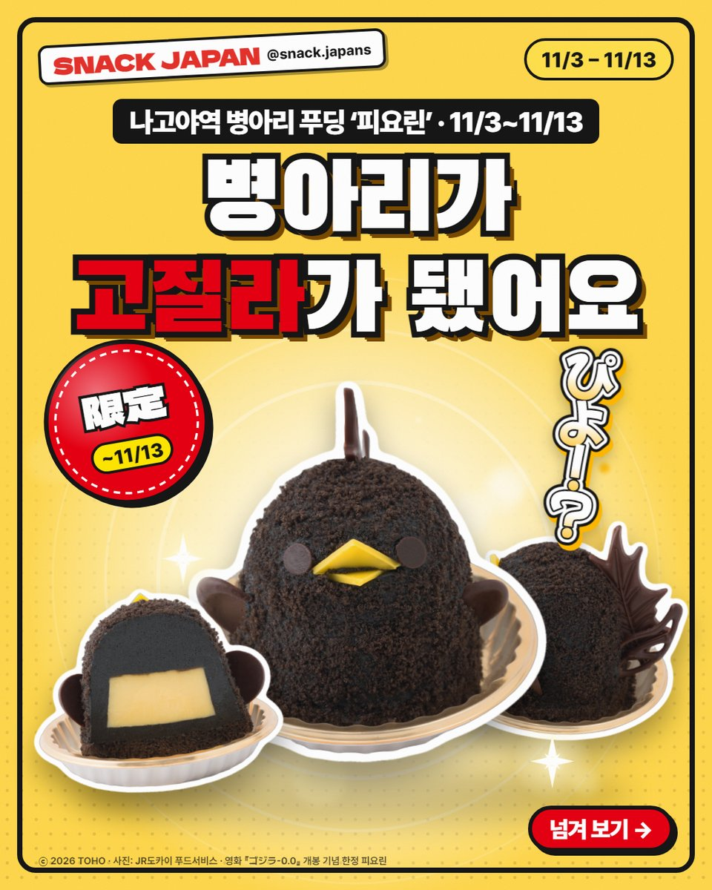
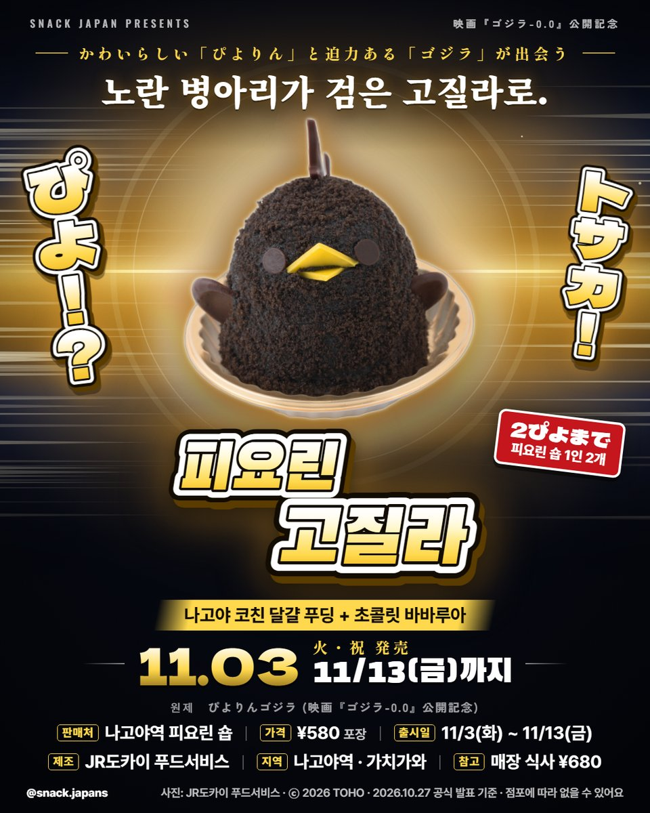
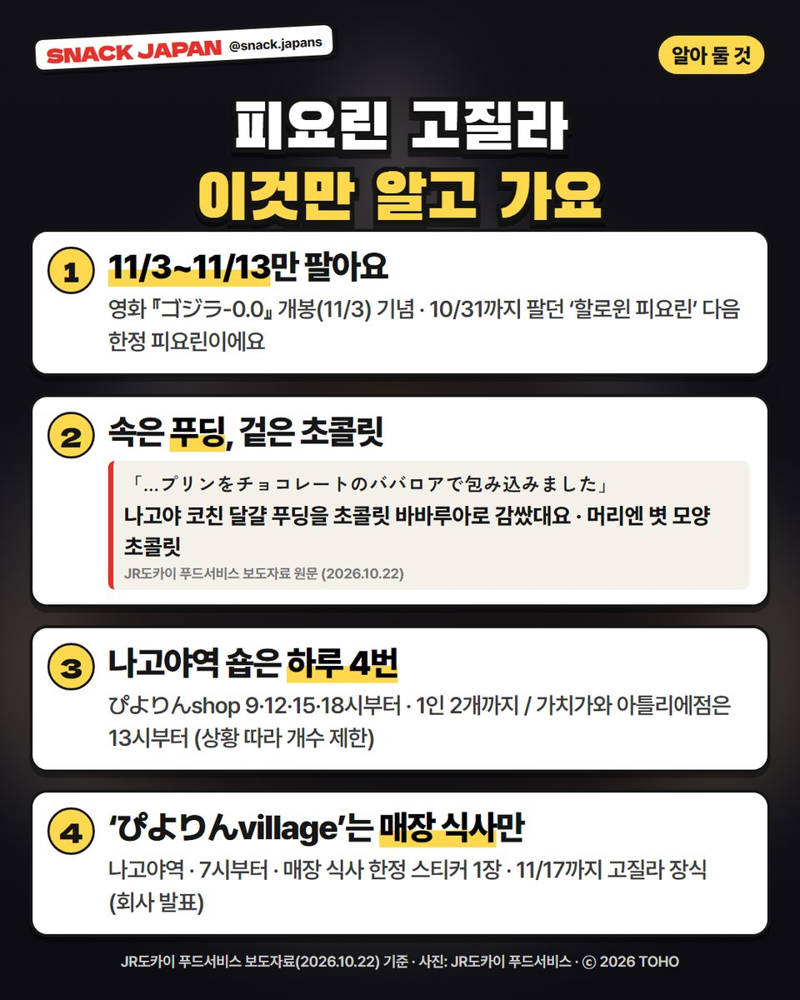
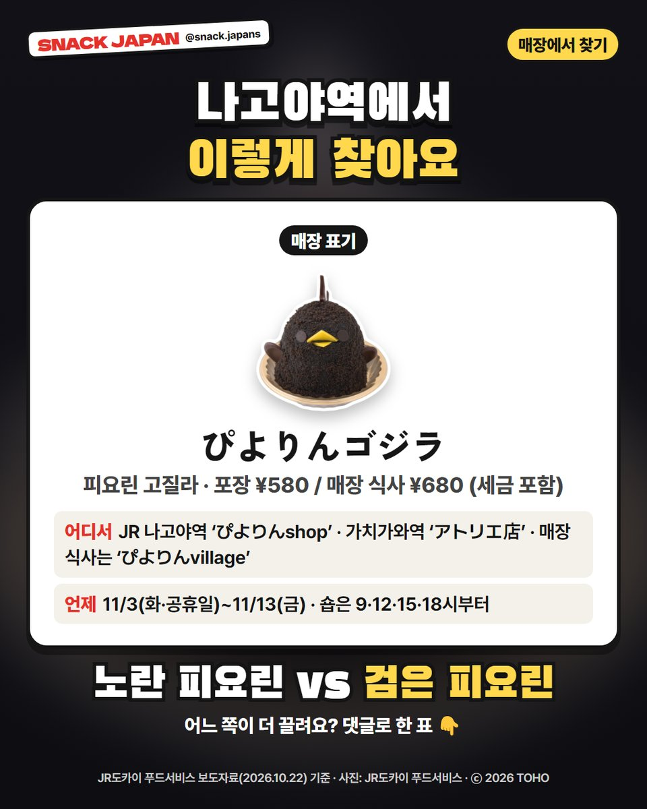

나고야역 병아리 푸딩 '피요린'이 11/3~11/13 고질라가 됐어요! 파는 곳·시간·1인 개수까지 가기 전에 알아 둘 것을 정리했어요.
노란 병아리가 검은 고질라로?! 🦖
나고야역 병아리 푸딩 '피요린'이
11/3부터 '피요린 고질라'로 변신했어요.
영화 『ゴジラ-0.0』 개봉 기념이고, 11/13까지만 팔아요.
JR도카이 푸드서비스 보도자료 기준으로 정리해 볼게요.

정면·단면·옆모습, 세 방향으로 보기 👀
1. 언제·어디서?
- 판매: 11/3(화·공휴일) ~ 11/13(금)
- 포장: JR 나고야역 'ぴよりんshop' — 9시·12시·15시·18시부터 판매, 1인 2개까지
- 포장: 가치가와역 'ぴよりんshop アトリエ店' — 13시부터 (그날 상황에 따라 개수 제한이 있을 수 있대요)
- 매장 식사: 나고야역 'ぴよりんvillage' — 7시부터, 매장 식사 전용
- 가격: 사진 카드에 정리해 뒀어요 (포장과 매장 식사 가격이 달라요)

병아리 등장, 아니 고질라 등장 🎬
2. 속은 푸딩, 겉은 초콜릿
JR도카이 푸드서비스 설명으로는
나고야 코친 달걀 푸딩을 초콜릿 바바루아로 감싸고,
고질라를 떠올리게 하는 볏(トサカ) 모양 초콜릿을 올렸대요.
- 원래 피요린은 노란 병아리 모양이에요
- 10/31까지 팔던 '할로윈 피요린' 다음 한정 피요린이에요

가기 전에 이 4가지만 체크 ✅
3. 매장 식사는 'ぴよりんvillage'
- 매장 식사 한정 오리지널 스티커 1장이 같이 나와요 (매달 그림이 바뀌는 스티커래요)
- 11/3~11/17에는 가게가 고질라 장식으로 꾸며져요
- 피요린 고질라 굿즈도 같이 팔아요

매장에선 이 이름을 찾으세요 🐥
4. 매장에서 찾는 법
- 매장 표기: ぴよりんゴジラ
- 나고야역 숍은 9·12·15·18시에 나눠서 팔기 시작해요
총평
- 기준: JR도카이 푸드서비스 보도자료(10/22), 10월 27일 확인
- 참고: 직접 먹어 보지 않아서 회사 설명만 옮겼어요
- 추천: 11/13까지 나고야역을 지나는 분, 고질라 좋아하는 분
노란 피요린 vs 검은 피요린,
어느 쪽이 더 끌려요? 댓글로 알려 주세요 🦖
사진: JR도카이 푸드서비스 · ⓒ 2026 TOHO
가게 정보 한눈에 보기 · 3곳